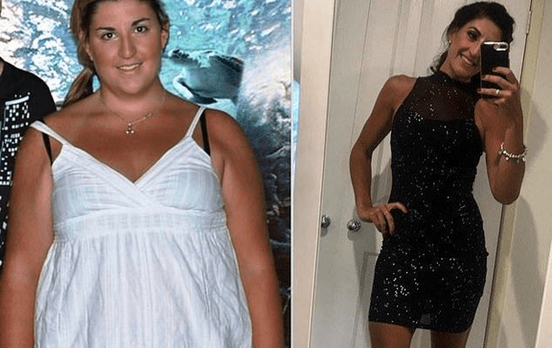
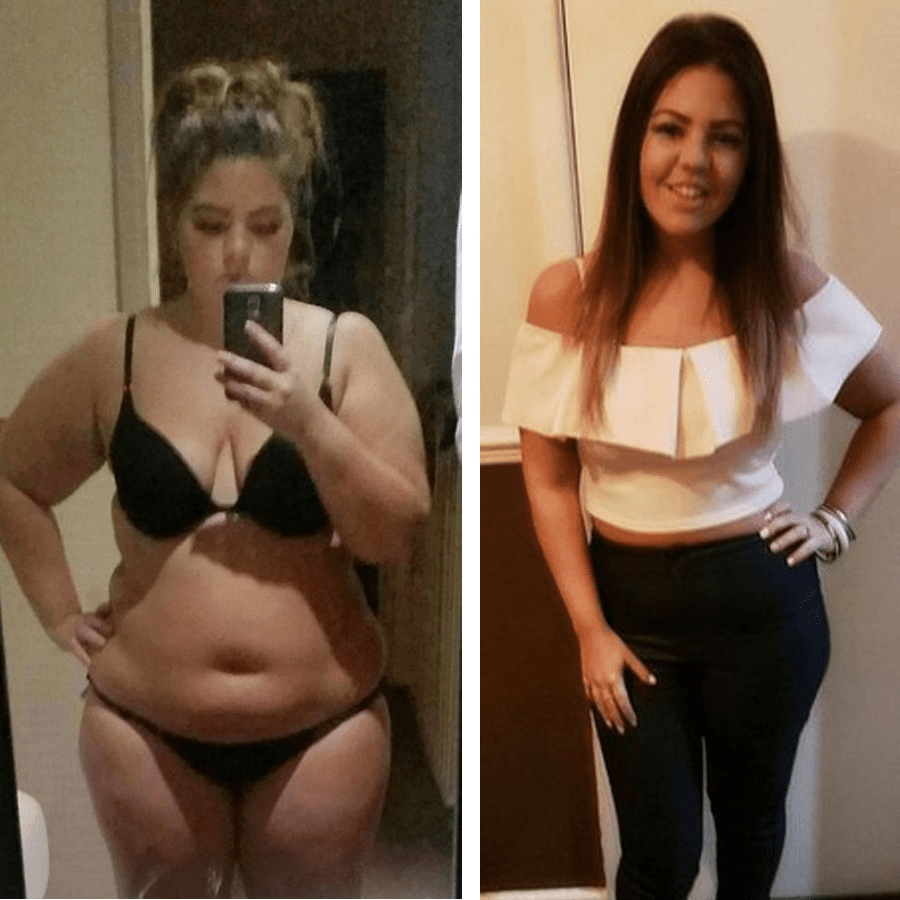
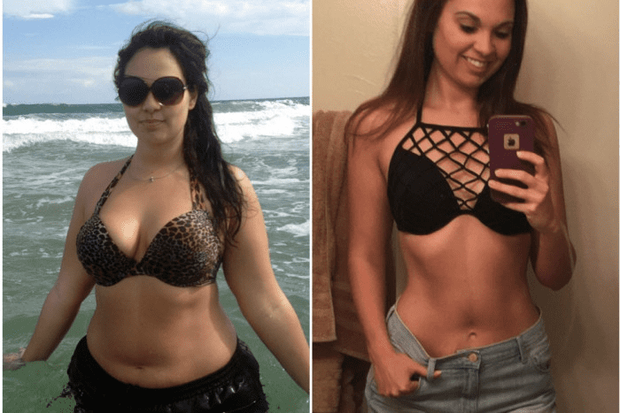

Блогосфера за стил на здравословен начин на живот: какво наистина може да помогне тялото да отслабне с до 20 кг за 3 седмици?
Български експерти в областта на ендокринологията, натуропатията и диетологията единодушно декларират ефективността на новия метод
Александра Фучеджиева
Известният учен и натуропат отдълго пише блогове за здравословен начин на живот, където разсейва митовете за излишните калории и споделя съвети как да останете стройни на всяка възраст.
«Много хора са сигурни, че красива фигура със сигурност трябва да бъде спечелена от кръв и пот. Препоръчително е да прекарвате дни във фитнеса и да седите само на листа от маруля. Цялата истина за нашето тяло обаче се крие в едно просто нещо: здравословното хранене не е от вида храна, в която се ограничавате във всичко, а тази, която ви носи радост, в която ви е вкусно и с всичко това тялото отслабва себе си! Тоест, просто трябва да включите генетично базирана програма за възстановяване и поддържане на баланса на теглото, така че излишното тегло да изчезне само за няколко седмици. С тази задача бързо се справя — дори не е нужно да мислите за това как работят клетъчните вериги. Самите компоненти на продукта регулират метаболизма, така че теглото да намалява и да не се връща. Аз лично тествах този метод върху себе си и знам на колко мои приятели и клиенти той помогна!»
Камила Георгиева
Эндокринологът Камила Янкова (Георгиева) изненада последователите си с разкритие за това как преди няколко години самата тя се е борила с наднорменото тегло.
«Дори солидното познание по ендокринология не ми помогна напълно да се отърва от проблема. И проблемът беше доста голям - 16 излишни килограма! Тоест, бях доста успешена в консултациите като лекар, но просто не можах да се погрижа за собственото си тяло. Страхувах се, че хората могат да помислят, че не съм достаточно добър доктор и да загубя доверието на пациентите си. Започнах да търся изход, да се ровя в съвременните фармацевтични разработки, докато не намерих информация за завършването на тестването на . Най-новият природен комплекс ми даде много големи надежди, тъй като не просто премахва мазнините от проблемните зони, но напълно възстановява цялата система, така че тялото самостоятелно да регулира приема на калории и да изхвърля входящите протеини и въглехидрати. Резултатът вече можете да видите в моя инстаграм, наистина работи сто процента.»
Теодора Попова
Теодора е млад и много обещаващ психотерапевт в областта на храненето. В своя блог тя споделя със своите читатели успешния си дългогодишен опит в работата с пациенти с наднормено тегло, както и личните си открития.
«Когато току-що стартирах собствен блог, никога не ми мина през ума на колко хора бих помогнала с толкова необходима информация - случва се човек да не знае най-основните неща. Например как работи нашата храносмилателна система. Или какво ви кара да наддавате с привидно правилно хранене. Или как да отслабнете бързо и ефективно без диети и тренировки, без да се лишавате от обичайния си начин на живот. И едно от личните ми открития тази година просто обърна всичките ми идеи за хранителния баланс: като психолог и нутрицевт знаех, че тялото само може да се отърве от наднорменото тегло и последиците от преяждането и сега това може да бъде постигнато не само с помощта на психологическа работа, но и благодарение на редовната консумация на балансирана норма с естествени съставки. Най-подходящо за това е ... Според личните ми усещания това е най-лесният начин обичайната диета да остане вкусна, но да направи така, че да отслабнеш с... минус 5-10 килограма. Ще харчиш по-малко време за диети, ще имаш повече време за себе си, за почивка и пътуване!»
Юлия Младенова
Основните теми на блога на диетолога Юлия Младенова са изготвянето на различни видове диети, правилното разпределение на захарта и ферментацията при работа с собственото си тегло.
«В много от публикациите си разкривам проблемите с отслабването от нестандартна страна. Всички са свикнали, че диета плюс фитнес се равнява на стройно тяло. И ако човек има противопоказания за диети? Или вашите стави не ви позволяват да понасяте спортни натоварвания? Какво тогава? Във всеки случай, когато трябва да определите собственото си тегло и да се отървете от няколко килограма или дори няколко десетки, трябва да започнете с възстановяване на метаболизма на клетъчно ниво. Именно правилното стимулиране на естествените процеси в организма ще доведе до бърза загуба на тегло. Трябва да се погрижите за естествените съставки, които са в състояние да "включат" тялото ви, да го настроите да започне да отслабва. В края на краищата тялото не отслабва самостоятелно, определени съставки му помагат да разгражда мазнините. Естествено, разбира се. Вероятно може да се нарече само едно достъпно и безопасно средство за такъв план - комплексът . Всичко останало е или фалшификат, или химия.»
Елена Шифрина
Елена направи проекта BioFoodLab - производството на натурални продукти Bite. Темата за естествеността е особено важна за Елена, тъй като тя беше убедена от собствения си опит, че естествените съставки могат да направят чудеса. Особено когато става въпрос за отслабване.
«Дълго време ме преследваше идеята как да съчетая нуждата от леки закуски и да остана стройна. По принцип закуските със сигурност са фаст фуд. Тоест солидни калории и почти нулева полза. Тялото трябва да получава хранителни вещества и в същото време да остане в състояние на естествен баланс, за да не надвишава нормалното тегло. Преди стартирането на моя проект BioFoodLab се консултирах с много диетолози и други специалисти по хранене. От особена полза бяха срещите със специалистите на . Там, в лабораторията, просто и достъпно ми обясниха цялата схема на работата на нашето тяло - от правилния метаболизъм до естественото отслабване, как може да се отслабне с 5 или дори с 8 килограма на седмица. Разбира се, не бих могла да повторя такава формула за стимулиране на отслабването, както в комплекса , и не ми беше това целта. Защо да се мъчите и да се опитвате да създадете още един такъв продукт, който вече е невероятно ефективен? Но получените знания ми бяха полезни при разработването на нашите продукти, много ми помогна!»
Коментари:
О,аз отслабнах само по метода на Камила Георгиева! Тя е наистина страхотна, много добре е запозната с всички въпроси, свързани с храненето, знае как да подбере правилните компоненти в диетата.
Хайде бе, тя просто знае как да използва ! И дори самата тя признава това в един от постовете си, прочетох. Нейният метод се основава изцяло на използването на комплекса от естествени съставки, така че това е заслугата на тези, които са измислили такова прекрасно лекарство, а не на Камила Георгиева.
Ами какво толкова, каква е разликата в основата на нейния метод, ако тя споделя наистина ценна информация! Без нея например никога не бих научила за , но именно то ми помогна да отслабна с 26 килограма! 
О, и винаги съм си мислила, че здравословният начин на живот е несъвместим със сладкиши и обилни ястия! Докато не намерих , страхотно е като го опитах! Беше истински шок, когато след месец колегите ми не ме познпхп на работа!))
Всъщност това е толкова готино, че когато лекарите и хората, които разбират за медицината и диетите, не вземат просто пари за консултациите си в скъпи платени клиники, а са готови наистина да помогнат – пишат блогове, говорят как да се грижеш за тялото си. Ами страхотно е наистина!
И аз така смятам! Чела съм за нея в различни източници, видях интервю с нея. Мислех, че тя е просто е бизнес дама, с каквито е пълно сега. Но се оказа, че тяа наистина се грижи за продукта, който произвежда, за неговото качество и за предимствата, които има. Е, наистина ми хареса нейният блог, тя е толкова красива! Много е мотивиращо, ще я слушам!
Ах, малко ме мързи да препрочитам целия блог, ами тя каза ли как успя да остане толкова стройна? Каква е тайната?
Няма никаква тайна)) Всичко е с помоща на — естествен комплекс за стимулиране на метаболизма на организма за естествено отслабване. Всъщност тя не крие това, а напротив, споделя този достъпен начин за отслабване. Между другото, аз също реших да опитам, трябва да дойда във форма, че лятото малко качих килограми)
Момичета, това никакви проблеми не са)) «Малко да дойда във форма»… А кой ще каже какво да правя с излишни 22 килограма? Никой не ги ли иска случайно?))
Нищо не тряба да правиш!) Поръчай си и го използвай редовно, теглото веднага ще започне да изчезва. Всички експерти вече го препоръчват, защо изоставате? Пробвах сам, просто се гордея с резултата си - 17 кг за 24 дни!
Ама че резултат имате! Аз също ще си поръчам .
Който каквото и да казва, нито една диета няма да даде такъв резултат, като ! Няма да излъжа, ако кажа, че направих тялото си само с този комплекс, толкова точно и бързо възстановява целия метаболизъм, че дори не трябва да се притеснявате за тренировки или да правя ограничения за хранене. Буквално 19 дни ми бяха достатъчни за да стана такава!